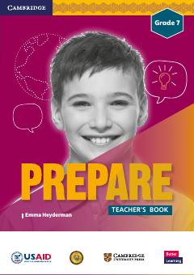

EG7-sinf ingliz tili fani o'qituvchilari uchun metodik qo'llanma.
Ushbu kitob O'zbekiston umumta'lim maktablarining 7-sinf o'qituvchilari uchun mo'ljallangan ingliz tili o'qitish metodikasi qo'llanmasidir. Darslik AQSh Xalqaro taraqqiyot agentligi (USAID) va O'zbekiston Respublikasi Xalq ta'limi vazirligi hamkorligida Cambridge University Press nashriyoti tomonidan moslashtirilgan.